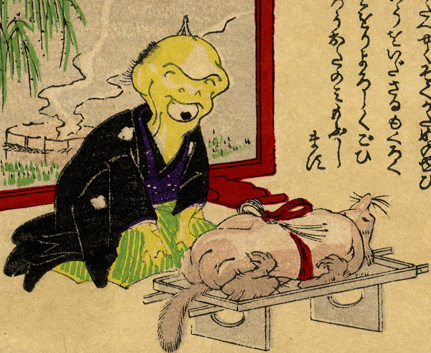

進物用の狸を前に正座した化物。肌は黄色く、羽織袴姿である。口の部分に大きな1つの目があり、両の目はない。
出典：親書誌：U426_nichibunken_0226：化物の嫁入；バケモノノヨメイリ／日付：2010／資源識別子：U426_nichibunken_0226_0025_0000
Copyright (c)2010- International Research Center for Japanese Studies, Kyoto, Japan. All rights reserved.